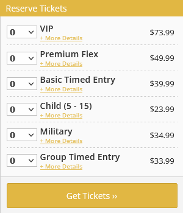

Today, I went to one of the showings of the Beyond Van Gogh travelling exhibit.
For those unfamiliar, it bills itself as an immersive experience of Van Gogh's life and artwork. The main draw is the room filled with projections of Van Gogh's artwork, often animated with music, text, and vocals to accompany the works.
However, you may not be entirely aware (because this is not very clear from marketing) that this room is the last part of the show, and about 50 minutes. I'll start with this experience, because I did find it enjoyable, though spotty. The animation and texture really adds a new depth to Van Gogh's artwork, and it can be quite emotional during the parts where the artwork is accompanied by quotes from Van Gogh's letters. However, you may find that some of the setpieces of this experience are not quite as impressive as others. While there are some, like one where portraits begin to be replaced flowers, or a very gorgeous 3D view of Café Terrace at Night, but sometimes the effect is as simple as the artworks being shown and having certain parts zoomed in on in a 3 by 3 grid. This latter effect happens in a few of the pieces, so it loses it's luster quickly and comes across as very low effort compared to the other effects.
The major part that I found annoying, though, is that it doesn't feel worth the price.
Here are the ticket prices for the show in Omaha (not where I went but just randomly chosen.)
The room that I described is, like I said, the end of the show. The first part of the show is a bunch of flat panels with text on them that you wind through and read. That's... genuinely it. They have backgrounds that show close-ups of Van Gogh's work, but there is no real animation or style to them. It's just white text on a background. I found this incredibly disappointing and a pretty boring way to convey information. Since the show is meant to be a sensory experience, you'd imagine that these elements would be interspersed throughout the main part, but you can barely hear the audio in the main room and reading the text on the screen can be difficult if your showing is particularly busy, which ours was.
After the flat screens, there's a room with a water rippling effect projected onto the floor. Maybe this is more impressive elsewhere, but it was just a big room with an effect on the wall and kind of on the floor. It was definitely disorienting, but nothing really happened to make it more than just something you go 'oh, neat' at and quickly walk past. We spent probably less than a minute in that room because there wasn't much to see.
This is going to make me come across as asocial, but I also felt like the sheer amount of people made it hard to enjoy the artworks. For one, in my showing, there were very few seats so we had to stand for basically 50 minutes to see the show or sit on the floor, which we ended up doing. I have some issues with my hips and back, so standing for that long wasn't great. You can walk around and get different angles, but generally if you're in the center, you'll see everything. The other issue was, as with most live events at this point, phones. I don't mind taking pictures and the show encourages it, but it can be really hard to enjoy the show with several people standing in front of you taking photos. I'm a pretty short person, though, so this is just my life in general. Either way, though, the room was a bit crowded and I feel like smaller groups would've made it a little bit more "immersive" like they advertised.
Overall, I can't say that I hated it: Again, it was really beautiful in portions and there were a lot of elements that I like. I just want to warn that you shouldn't go in with super high expectations, particularly those set by the marketing material. The part that they focus on is just a portion of the show, and while the parts before that are thankfully short, they still may leave a bit of a sour taste in your mouth on the way out.